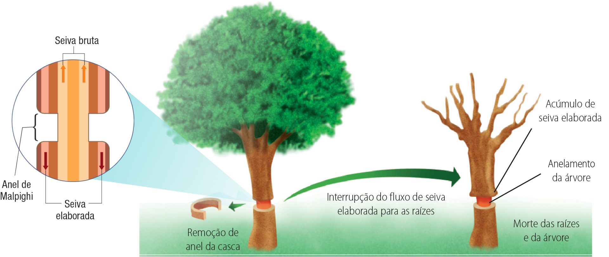

Que fatores ambientais são necessários para que uma árvore como a da imagem realize suas funções vitais?
Quais mecanismos e estruturas estão envolvidos no processo de fotossíntese e na condução das seivas produzidas pelas plantas?
De que maneira ocorre o crescimento e o desenvolvimento dos diferentes órgãos vegetais?
Objetivos da unidade
compreender o processo de condução da água e de outras substâncias pelos diversos órgãos vegetais;
identificar os diferentes hormônios vegetais e sua ação no desenvolvimento das plantas;
entender como as plantas respondem aos estímulos externos e às mudanças ambientais temporárias.
Transporte e nutrição vegetal
A sobrevivência de uma planta está diretamente relacionada à sua capacidade de melhor aproveitamento dos recursos presentes no ambiente em que se encontra. Os processos metabólicos envolvidos no desenvolvimento das plantas incluem
absorção de água, nutrientes e gases, condução de substâncias, transpiração e fotossíntese. A fisiologia vegetal (do grego physis, função; logos, estudo) estuda esses processos e a maneira como eles ocorrem em
diferentes espécies de plantas, de variados tipos de hábitats.
Nutrição mineral das plantas
Por meio das raízes, as plantas retiram água e sais minerais do solo. Esses nutrientes são essenciais ao seu desenvolvimento e constituem sua nutrição inorgânica, formando a seiva bruta. A área de absorção das raízes
denomina-se região pilífera. Nela, há um aumento da superfície de absorção em virtude da existência de pelos absorventes.
A absorção de sais minerais ocorre por transporte ativo, ou seja, com consumo energético (ATP). Já a absorção da água acontece pelo processo osmótico. Para isso, as
células das raízes devem apresentar maior concentração de solutos (hipertônicas) em relação ao solo, que deve ser menos concentrado (hipotônico). Assim, a água penetra nas células dos pelos absorventes, que passam a solução para as
células vizinhas até chegar ao xilema.
Esse trajeto da seiva bruta pode ocorrer de duas maneiras:
via simplasto – a água desloca-se por osmose, passando por dentro das células da epiderme e dos parênquimas do córtex até atingir o xilema (nesse caso, os sais minerais deslocam-se por transporte
ativo);
via apoplasto – a água e os sais minerais passam pelos espaços entre as células, fluindo livremente desde a epiderme, passando pelo córtex até atingirem a endoderme. Na endoderme, o movimento da
água é obstruído pelas estrias de Caspary, passando a ocorrer até o cilindro central pela via simplasto, o que possibilita a seleção e o transporte de sais, além da regularização da
quantidade de água que segue pelo xilema.
estria de Caspary: faixa de suberina ao redor das células da endoderme que bloqueia a passagem de água e sais minerais, impedindo o retorno da seiva bruta, e controla o movimento de sais minerais que penetram no
cilindro central da raiz e chegam ao xilema, evitando que retornem ao córtex.
Cris Alencar/Divo. 2012. Digital.
Representação esquemática das vias simplasto e apoplasto para o deslocamento da água e dos sais minerais ao entrar na raiz
Os sais minerais essenciais para o metabolismo e o crescimento vegetal são divididos em:
macronutrientes – as plantas necessitam em grande quantidade, sendo os principais carbono (C), nitrogênio (N), fósforo (P), potássio (K), enxofre (S), cálcio (Ca) e
magnésio (Mg);
O nitrogênio participa da síntese de proteínas, ácidos nucleicos, clorofila e outras moléculas. Assim, sua presença no solo é determinante para o desenvolvimento vegetal e a produção agrícola.
micronutrientes – são necessários em pequenas quantidades, por exemplo, ferro (Fe), boro (B), cobre (Cu), manganês (Mn), cloro (Cℓ) e zinco (Zn).
A presença de sais minerais no solo deve ser adequada ao tipo de planta que vai se desenvolver. Sua falta ou seu excesso podem prejudicar o crescimento do vegetal, levando a sintomas como folhas
amareladas, alterações na taxa de crescimento e ausência de flores e frutos. Na agricultura, os fertilizantes ou adubos são utilizados para correção dos minerais no solo. Entretanto, devem ser empregados de modo criterioso e
equilibrado, pois o uso do solo deve ser feito de forma que sua fertilidade seja mantida, sem afetar os ecossistemas.
Conexões
Nutrição inorgânica vegetal e micro-organismos
A nutrição inorgânica vegetal é facilitada por associações benéficas entre as plantas e micro-organismos como bactérias e fungos.
As bactérias atuam na decomposição de matéria orgânica no solo, realizando a ciclagem de nutrientes, como fósforo, magnésio e cálcio, que podem ser absorvidos por outras plantas. Alguns tipos de bactérias acumulam-se no interior das
raízes realizando a fixação de nitrogênio diretamente no vegetal.
Já os fungos podem formar associações com as plantas (as micorrizas), facilitando a absorção de nutrientes.
Transpiração vegetal
Mecanismo de perda de água pela planta na forma de vapor, ocorrendo principalmente nas folhas. A transpiração foliar é realizada pela cutícula e pelos estômatos, com a seguinte proporção:
Transpiração total = transpiração estomática (cerca de 90%) + transpiração cuticular (cerca de 10%)
A presença de cutina, sobretudo nas folhas, impede a transpiração excessiva da planta. No caso das xerófitas (plantas de lugares secos), como os cactos, a cutícula apresenta espessura maior, com maior depósito de cutina, o que evita a
perda excessiva de água em um ambiente onde esse recurso é escasso.
A principal maneira de eliminar água pela transpiração ocorre pelos estômatos, que se situam principalmente na epiderme inferior da folha. Cada estômato é constituído por duas células estomáticas clorofiladas, denominadas
células-guarda, que apresentam as concavidades dispostas frente a frente. Na face côncava, a parede celular é mais espessa e forma uma abertura (ou poro), chamada ostíolo, por onde ocorrem a
transpiração e as trocas de gases entre a planta e o ambiente. Os gases trocados possibilitam a realização da respiração e da fotossíntese.
Abertura e fechamento dos estômatos
O mecanismo de abertura e fechamento dos estômatos está diretamente relacionado à fisiologia vegetal, propiciando a ocorrência dos processos de
transpiração e fotossíntese e a manutenção do fluxo de seiva bruta pelo xilema.
O controle de abertura e fechamento dos estômatos é realizado constantemente pelas plantas e resulta dos diferentes estímulos internos e externos que estas recebem. As taxas de fotossíntese e transpiração variam de
acordo com essas alterações repentinas, como chuva, nuvens bloqueando a luz solar e taxa de gases na atmosfera.
A luz solar é o sinal ambiental mais importante na regulação do movimento estomático. Além dela, a oferta de água no solo, a temperatura ambiente, a concentração de gás carbônico, a presença ou não de vento, o sombreamento ou não da
folha e a quantidade de água na folha influenciam no funcionamento dos estômatos.
Na presença de luz, ocorre a fotossíntese e a consequente redução de CO2 no interior das folhas, o que induz a abertura dos estômatos caso haja suprimento suficiente de água. À noite, quando não há luz natural e, portanto,
não há demanda por CO2 dentro da folha, a abertura estomática é menor.
A abertura e o fechamento dos estômatos também são induzidos pela variação de íons potássio (K+) no interior das células-guarda. Os estômatos podem se abrir quando há acúmulo de K+ e, assim, as
células-guarda ganham água por osmose, tornando-se túrgidas. Se houver a saída de K+ das células-guarda, ocorre perda de água por osmose, o que leva as células-guarda a tornarem-se flácidas.
Assim, os estômatos fecham-se, evitando que a planta sofra desidratação.
Eduardo Borges. 2012. Digital.
Representação esquemática da estrutura de um estômato e mecanismos de abertura e fechamento
Condução das seivas
A água e os sais minerais absorvidos do solo formam a seiva bruta, que deve chegar às folhas. Para isso, é necessário um conjunto de células de transporte, constituindo os vasos lenhosos ou
vasos do xilema. Chegando às folhas e às
regiões clorofiladas do caule, ocorre a fotossíntese e a formação da seiva elaborada ou orgânica. Os compostos orgânicos (principalmente a glicose) produzidos na fotossíntese são distribuídos às diversas regiões da
planta pelos vasos
liberianos ou vasos do floema. Esses dois processos envolvem mecanismos complexos para que o transporte de seiva não seja interrompido e chegue a todas as partes da planta.
Mecanismo de condução da seiva bruta
A seiva bruta é transportada contra a força da gravidade. Assim, como explicar a subida da seiva bruta em uma sequoia de 100 metros? O mecanismo envolvido nesse processo é explicado pela teoria da
coesão-tensão-transpiração ou teoria de Dixon.
Essa teoria foi proposta pelo botânico irlandês Henry Horatio Dixon, no fim do século XIX, e se baseia no fato de existir coesão entre as moléculas de água, o que as mantêm unidas pelas ligações de hidrogênio. Assim, unidas, elas são
puxadas pela força de sucção gerada pela transpiração vegetal, que leva a uma tensão na coluna líquida do xilema. Esse processo possibilita a subida da água pelo corpo da planta.
A teoria de Dixon, ou sucção transpiratória, sugere que, quanto maior a transpiração das folhas, mais rápida será a subida da seiva bruta pelo xilema, mesmo contra a ação da gravidade.
Divo. 2012. Digital.
Representação esquemática da teoria da coesão-tensão-transpiração, em que, por meio da transpiração, a ação aspirante das folhas possibilita a subida da seiva bruta pelo xilema
Mecanismo de condução da seiva elaborada
A seiva elaborada é produzida, principalmente, no interior das folhas e encaminhada ativamente aos vasos liberianos (floema) para o transporte às diversas partes do vegetal. Sua condução é mais lenta, pois contém substâncias orgânicas
que tornam o meio mais concentrado (hipertônico). Assim, é necessário que a água entre (por osmose) no floema, auxiliando no transporte. Esse movimento da seiva elaborada pelo floema denomina-se translocação (transporte
em massa) e ocorre em diferentes sentidos, pois todas as estruturas da planta dependem de seu recebimento.
Quando a seiva elaborada atinge frutos, caule, raiz ou gemas, as células desses órgãos retiram substâncias orgânicas (especialmente sacarose) dos vasos liberianos, reduzindo a concentração de solutos no interior do floema. Isso provoca
o retorno da água para os vasos do xilema, criando uma circulação contínua de nutrientes dentro da planta.
Observe, no esquema, a ocorrência desse transporte, analisando a translocação da seiva elaborada pelo floema.
Dagoberto Pereira/Marcos Gomes. 2013. Digital.
Representação esquemática da correlação entre o processo de fotossíntese e o transporte das seivas bruta e elaborada ao longo da planta
A importância do floema na condução das substâncias orgânicas nas plantas foi comprovada, há mais de 300 anos, por meio de um experimento realizado pelo italiano Marcello Malpighi (1628-1694). Ele retirou um anel da casca de uma
árvore, de modo que os vasos do floema também foram removidos, pois se localizam próximo à região da casca. Isso faz com que a condução da seiva elaborada seja bloqueada, provocando um acúmulo de açúcares na região situada acima do
corte. Com isso, a raiz passa a utilizar as reservas energéticas e suas células começam a morrer por falta de energia para a realização das atividades metabólicas.
O anel retirado do tronco da árvore nesse experimento ficou conhecido como anel de Malpighi. No entanto, é importante lembrar que o floema transporta açúcares também no sentido ascendente, e não apenas descendente.

Marcos Gomes. 2012. Digital
Representação esquemática do experimento de Malpighi, que interrompe o transporte da seiva elaborada para as raízes
Fotossíntese
O processo de fotossíntese pode ser representado pela seguinte equação simplificada:
As reações da fotossíntese são bastante complexas e acontecem em duas etapas: etapa fotoquímica, ocorre nos tilacoides dos cloroplastos e depende de luz, e etapa química, considerada a fase enzimática
do processo, acontece no estroma dos cloroplastos e independe da presença de luz.
A realização da fotossíntese não depende apenas da presença de energia luminosa. Existem outros fatores externos que limitam a velocidade da fotossíntese, entre eles a concentração de dióxido de carbono (CO2) e a
temperatura. Quando um desses fatores varia, a intensidade da fotossíntese sofre alteração.
Luminosidade
Quando a intensidade luminosa aumenta e a concentração de CO2 e a temperatura não se alteram, a velocidade da fotossíntese sofre uma elevação. No entanto, existe um limite máximo, denominado ponto de saturação
luminosa, em que a fotossíntese não pode mais ser intensificada. A partir desse ponto, a velocidade da fotossíntese somente pode aumentar se os outros dois fatores (concentração de CO2 e temperatura) apresentarem
variações, pois a luminosidade já atingiu seu ponto máximo.
O fator luminosidade é variável entre as plantas, pois existem aquelas que exigem mais luz, como as heliófitas (pinheiros, palmeiras, jabuticabeiras), e as que exigem menos luz ou umbrófitas, podendo
viver em locais sombreados (musgos, samambaias, avencas).
A luz aumenta a velocidade da fotossíntese até o ponto de saturação.
Concentração de CO2
O CO2 é utilizado na fotossíntese como fonte de carbono, que é incorporado às moléculas orgânicas produzidas. As plantas absorvem o CO2 presente na atmosfera, assim como o do processo de respiração celular. Sem
esse gás, a taxa fotossintética é nula.
Com o CO2, ocorre um fato similar ao da luminosidade, pois ele também influencia na velocidade da fotossíntese quando a luz e a temperatura são constantes. O dióxido de carbono aumenta a taxa fotossintética até uma
concentração de cerca de 0,05% no ar atmosférico. Isso significa que, se os outros dois fatores (luminosidade e temperatura) não sofrerem variação e o CO2 estiver oscilando, é essa oscilação que limita a velocidade da
fotossíntese.
O dióxido de carbono é um fator limitante da fotossíntese.
Temperatura
Quando a intensidade luminosa e a taxa de CO2 não se alteram, a temperatura passa a ser o fator limitante da fotossíntese. Nesse caso, o aumento da temperatura possibilita um rendimento fotossintético maior. No entanto, as
temperaturas muito baixas ou muito elevadas influenciam na ação das enzimas que desencadeiam as reações do metabolismo das plantas, tendo como consequência a redução da velocidade das reações.
Para a maioria das plantas, a taxa máxima da produção de oxigênio ocorre a aproximadamente 35 °C, dependendo da luminosidade e da quantidade de CO2 no ar atmosférico.
A temperatura influencia fortemente na fotossíntese.
Conexões
Aquecimento global “engorda” as plantas
[...] Se um clima mais quente pode fazer com que as plantas cresçam menos, uma atmosfera com mais CO2 pode produzir justamente o efeito contrário: levá-las a se expandir e acumular mais reservas, ou seja, ficarem maiores
ou mais
gordas. Uma quantidade maior de carbono disponível nas plantas talvez tenha repercussões negativas sobre a sua longevidade e para as teias alimentares de seu ecossistema. [...] Na realidade, é provável que, com o aumento de
CO2 e de
temperatura, tenhamos um período em que os efeitos sejam positivos, acelerando o metabolismo da planta até um ponto ótimo, depois do qual surgem efeitos compensadores ou até negativos. Nada disso é 100% certo, mas sabemos que a
fotossíntese das plantas em todo o mundo está aumentando em razão do aumento na concentração de CO2 atmosférico desde a Revolução Industrial até hoje e que essa alteração está fazendo os vegetais ficarem mais pesados.
Portanto, se é
para apostar numa das duas tendências, diria que as plantas têm chances maiores de engordar do que emagrecer por causa das mudanças climáticas. Pelo menos até cerca de 2050.
A maioria dos experimentos e observações científicas indica que uma atmosfera com mais CO2 e, por tabela, com temperaturas mais elevadas deverá provocar um aumento geral na biomassa das plantas. Provavelmente, as plantas
não ficarão maiores em termos de tamanho, mas sim mais gordas, pois acumulariam mais amido e mais celulose num ambiente com fartas concentrações de gás carbônico. [...]
BUCKERIDGE, Marcos. Aquecimento global “engorda” as plantas. Disponível em: <http://revistapesquisa.fapesp.br/2007/09/03/aquecimentoglobal-engorda-as-plantas/>. Acesso em: 12 jun. 2015.
Ponto de compensação fótico
A atividade fotossintética depende de luz, mas o consumo da glicose produzida e do oxigênio ocorre de modo constante, ou seja, durante o dia e à noite, com ou sem luz, durante a respiração celular aeróbia para a
obtenção de energia.
Quando a luminosidade chega a um ponto em que a taxa de fotossíntese é igual à de respiração, a planta atinge o ponto de compensação (PC) fótico ou luminoso, ou seja, os processos de respiração e fotossíntese se
equilibram e a mesma quantidade de O2 e glicose produzida na fotossíntese é consumida na respiração celular.
No entanto, as plantas só podem se desenvolver quando a intensidade luminosa possibilita que a produção fotossintética seja maior que o consumo respiratório. Se o consumo for maior que a produção, a planta não consegue glicose
suficiente para crescer.
Representação gráfica da variação da velocidade da respiração e da fotossíntese em função da intensidade luminosa
É importante destacar que, em um ecossistema em equilíbrio, como uma floresta tropical, as trocas globais são pequenas, uma vez que as substâncias liberadas (oxigênio e glicose, por exemplo) são consumidas pelo próprio ecossistema.
Populações vegetais mais abertas e dinâmicas têm balanço positivo, pois sintetizam mais produtos do que consomem. As algas marinhas, por exemplo, produzem a maior massa fotossintetizante da biosfera, fornecendo grande
parte do oxigênio utilizado na respiração celular dos seres vivos.
Mundo do trabalho
Agrônomo ou engenheiro agrônomo
[...]
O [engenheiro] agrônomo faz parte de todas as etapas da produção e comercialização dos produtos, acompanhando desde o plantio até o armazenamento e distribuição da mercadoria ou, no caso de animais, do controle de doenças,
reprodução e abate. O agrônomo planeja, auxilia e executa os serviços ligados à escolha da cultura, preparação do solo, do plantio, da adubação e da colheita. Já na agropecuária, cuida da criação, alimento, saúde, reprodução e abate
de rebanhos, bem como no combate a pragas e doenças que atacam plantações e animais. Acompanha ainda o transporte, o beneficiamento, a industrialização e a venda dos produtos. Além disso, esse profissional também deve: planejar e
executar obras e serviços técnicos de engenharia rural, incluindo construções para fins rurais, visando a aumentar a funcionalidade das instalações e irrigação e drenagem para fins agrícolas; pesquisar e implantar novas tecnologias
no setor agroindustrial, incluindo beneficiamento e conservação de produtos e seu aproveitamento industrial, aproveitamento de recursos naturais e do meio ambiente, defesa e vigilância sanitária, projetos de mecânica, adubação,
irrigação, colheita; fiscalizar a indústria e o comércio de adubos e agrotóxicos [...]; cuidar da padronização e do controle de qualidade dos produtos finais.
(UFJF – MG) O esquema abaixo representa caminhos de absorção de água pelos vegetais.
Sobre o esquema, responda às seguintes questões.
a) Qual órgão vegetal está representado no esquema acima e qual a região, quanto à morfologia externa, onde foi realizado o corte esquematizado?
b) Quanto à compartimentalização, diferencie os caminhos (A e B) que a água pode seguir quando está sendo absorvida pelo vegetal.
c) A camada de células (Y) se encontra entre o córtex e o cilindro vascular, possui suas paredes celulares impregnadas por suberina, formando faixas denominadas estrias de Caspary. Nomeie a
camada Y e cite a função das estrias de Caspary no processo de absorção de água pelos vegetais.
(FUVEST – SP) O gráfico abaixo indica a transpiração de uma árvore, num ambiente em que a temperatura permaneceu em torno dos 20 °C, num ciclo de 24 horas.
a) Em que período (A, B, C ou D) a absorção de água, pela planta, é a menor?
b) Em que período ocorre a abertura máxima dos estômatos?
c) Como a concentração de gás carbônico afeta a abertura dos estômatos?
d) Como a luminosidade afeta a abertura dos estômatos?
(UFSC) A figura abaixo representa, ao centro, o esquema de uma estrutura vegetal chamada estômato.
A respeito da estrutura acima e de seu papel fisiológico, assinale a(s) proposição(ões) correta(s).
(01) O funcionamento dos estômatos está associado aos mecanismos de transporte de seiva no vegetal.
(02) A seta II da figura indica a presença de cloroplastos nas células estomáticas.
(04) Os estômatos são estruturas encontradas em várias partes do vegetal, especialmente no caule.
(08) A seta III indica as células acessórias ou subsidiárias; através delas ocorre a eliminação da água por transpiração para o exterior do vegetal.
(16) Os estômatos são estruturas muito versáteis, participando inclusive dos mecanismos de defesa vegetal, pois podem produzir e eliminar substâncias tóxicas.
(32) A seta I indica a abertura estomática que ocorre entre as células-guarda e por onde se realizam as trocas gasosas nos vegetais.
(64) O funcionamento do estômato é controlado por fatores intracelulares, sendo independente de fatores externos como a luminosidade e a umidade.
(UFRGS – RS) Assinale a alternativa correta em relação à condução da seiva bruta em angiospermas.
a) O fluxo de seiva bruta ocorre das folhas para outras partes da planta através do floema.
b) A explicação para a seiva bruta mover-se pela planta é dada pela hipótese do fluxo por pressão.
c) A transpiração aumenta a pressão osmótica e promove o fluxo da água desde as raízes até as folhas, no interior do xilema.
d) A absorção de CO2 na fotossíntese pode aumentar o fluxo da seiva bruta para as folhas.
e) Ao retirarmos um anel ao redor do caule (anel de Malpighi), é possível verificar a morte da planta pela interrupção do fluxo da seiva bruta.
(UFC – CE) A teoria de Dixon é uma das hipóteses que tenta explicar o transporte de água da raiz até as folhas de árvores com mais de 30 metros de altura, como a castanheira-do-pará. Assinale a alternativa que contém aspectos nos
quais se baseia essa teoria.
a) Coesão entre as moléculas de água, adesão entre essas moléculas e as paredes do xilema, tensão gerada no interior dos vasos pela transpiração foliar.
b) Aumento da concentração osmótica no interior dos vasos xilemáticos da raiz, entrada de água por osmose, impulsão da seiva para cima.
c) Semelhança dos vasos do xilema a tubos de diâmetro microscópico, propriedades de adesão e coesão das moléculas de água, ocorrência do fenômeno da capilaridade.
d) Permeabilidade seletiva das células do córtex da raiz, presença da endoderme com as estrias de Caspary, transporte ascendente da seiva bruta.
e) Produção de carboidratos nas folhas, aumento da concentração osmótica nesses órgãos, ascensão da seiva bruta, por osmose e capilaridade, nos vasos do xilema.
Justifique as diferenças no ponto de compensação (PC) fótico das duas plantas (1 e 2) referenciadas no gráfico a seguir.
Fitormônios
Por que um pedaço da planta pode produzir raízes e caules? De que maneira as gemas quebram a dormência? O que faz com que as sementes germinem? O que mantém os estômatos fechados? Como os frutos amadurecem?
Essas e muitas outras perguntas têm suas respostas nos estudos dos fitormônios (do grego phyton, planta; hormon, aquele que excita), ou seja, substâncias reguladoras do crescimento vegetal. Os
fitormônios são compostos orgânicos que, em concentrações baixas, promovem, inibem ou modificam o crescimento e o desenvolvimento do vegetal.
Entre os fitormônios, destacam-se auxinas, giberelinas, citocininas, etileno e ácido abscísico.
Auxinas
As auxinas (do grego auxein, crescer) são fitormônios responsáveis pelo crescimento de raízes e caules e pela formação de diversas partes da planta, como folhas, flores e frutos. Elas são produzidas nas gemas dos caules, nas
folhas jovens, nos frutos e nas sementes em germinação. Essas substâncias estimulam a ação de genes codificadores de enzimas que possibilitam a perda da rigidez da parede celular. Isso proporciona a distensão ou alongamento das células
vegetais, sobretudo de gemas (especialmente apicais), folhas jovens e sementes, desencadeando a produção dos frutos.
A auxina natural de ocorrência geral nas plantas é o ácido indolacético (AIA). Pesquisas com essa substância possibilitaram a descoberta de outros compostos semelhantes e que apresentam o mesmo efeito, como os ácidos
indolbutírico e indolpropiônico.
De acordo com a quantidade de auxinas presente nesses locais, pode ocorrer a estimulação ou a inibição das atividades de crescimento. Observe o gráfico.
Representação gráfica da diferença entre o crescimento da raiz e do caule de acordo com a concentração de auxinas (AIA)
No gráfico, é possível perceber que a raiz e o caule de uma mesma planta realizam atividades de crescimento com diferentes quantidades de auxinas. Isso significa que a dose que estimula o crescimento da raiz inibe o crescimento do
caule, e vice-versa. Nesse caso, a raiz precisa de uma quantidade menor de auxinas, pois é mais sensível a elas que o caule.
Dominância apical
A gema ou broto que determina o crescimento vertical do caule denomina-se apical. Nessa região meristemática primária, ocorre a produção suficiente da auxina (AIA) que inibe o desenvolvimento das gemas laterais, como
mostrado no gráfico anterior. Isso acontece porque os brotos das extremidades superiores produzem auxinas que, ao descerem pelo caule, inibem o desenvolvimento da maioria das gemas laterais (dominância apical), impedindo que formem
novos ramos. Se a gema apical for retirada, a menor quantidade de auxinas presente nas gemas laterais passa a estimular o desenvolvimento de novos ramos.
Eduardo Borges. 2012. Digital.
A concentração de auxina é maior na região da gema apical (A). A poda dessa região estimula o desenvolvimento das gemas laterais (B).
Esse processo de dominância apical, ou seja, a necessidade de maior quantidade de auxinas para o crescimento da gema dominante, está diretamente relacionado à realização das podas constantemente feitas em plantas frutíferas. Por meio
desse método, as plantas desenvolvem mais ramos laterais e, consequentemente, produzem mais flores, o que possibilita a formação de uma quantidade maior de frutos. Na poda apical, a planta apresenta altura menor e maior número de
galhos.
Latinstock/SPL
Enraizamento e crescimento de folhas a partir de um fragmento do caule resultantes da ação das auxinas
As auxinas também estão relacionadas com as seguintes funções:
curvatura de caules e raízes (tropismos);
enraizamento dos pedaços de caules cortados (estacas), produzindo as mudas e estimulando a propagação vegetativa;
modificações nas paredes do ovário durante a formação do fruto;
formação de frutos partenocárpicos;
desenvolvimento dos brotos florais durante o processo de floração;
retardamento da abscisão foliar que determina a queda das folhas.
A abscisão é causada por transformações que ocorrem nas células de uma região específica, situada na base dos pecíolos. As auxinas inibem a desintegração dessas células, evitando que as folhas e os frutos caiam.
Apenas quando os frutos amadurecem e as folhas se desenvolvem é que a quantidade de auxinas diminui, determinando a formação da camada de abscisão, que possibilita a queda dos frutos e das folhas.
Giberelinas
Esse grupo de fitormônios compreende mais de cem tipos de substâncias, e a mais bem estudada se denomina ácido giberélico. As giberelinas (GAs) são produzidas em meristemas, folhas jovens,
sementes imaturas e frutos, porém apresentam pouco efeito nas raízes, estimulando principalmente o crescimento das folhas e, em associação com as auxinas, do caule por alongamento e divisão das células.
As giberelinas são utilizadas comercialmente para a produção de frutos partenocárpicos, como as uvas Thompson, que, com a aspersão fitormonal, crescem mais e sem sementes, características apreciadas pelos
consumidores.
Quando as giberelinas não são produzidas, ocorre o nanismo vegetal. No caso das sementes, quando estas entram em contato com a água, ocorre a liberação de giberelinas, desencadeando o processo de quebra da dormência. Com isso, a
radícula inicia seu crescimento e rompe o tegumento da semente, aparecendo, assim, como uma raiz jovem. A energia para a germinação da semente vem da degradação do açúcar presente no endosperma.
Citocininas
Produzidas nas raízes e transportadas pelo xilema para toda a planta, as citocininas recebem essa denominação por estimularem a citocinese ou divisão celular. Assim, esses fitormônios induzem a
divisão e a diferenciação de células vegetais, sendo encontrados ativos em raízes, folhas, frutos e sementes.
A identificação das citocininas ocorreu na década de 1940, quando alguns pesquisadores verificaram que, adicionando água de coco (endosperma líquido) às culturas de tecidos de tabaco, as células da raiz apresentavam
divisões celulares mais intensas.
Além disso, com as auxinas, as citocininas promovem o crescimento vegetal por meio das diferenciações celulares e atuam no controle da dominância apical, ou seja, na capacidade da gema apical de suprimir o desenvolvimento de gemas
axilares. As citocininas também retardam o envelhecimento das folhas (senescência foliar). Um ramo de planta cortado mantém-se conservado por mais tempo quando pulverizado com citocininas, como em floriculturas.
Etileno
É um hormônio gasoso produzido naturalmente em diversos órgãos vegetais e que atua, principalmente, no amadurecimento de frutos. Mesmo após a colheita, os frutos continuam liberando etileno. Assim, se forem mantidos
enrolados em jornais ou envolvidos por sacos plásticos, amadurecerão mais rapidamente, pois esses procedimentos retêm o gás liberado pelos frutos, aumentando a velocidade de maturação.
Para evitar o amadurecimento de frutos que precisam ser transportados por longas distâncias, sua conservação é feita em câmaras frigoríficas, utilizando-se baixas temperaturas e concentrações elevadas de CO2, o que inibe a
produção de etileno.
O etileno também tem papel essencial nas respostas da planta ao estresse mecânico, como obstáculos que impedem seu crescimento, desencadeando a morte programada de determinadas células e órgãos vegetais (ou da planta inteira). Ele atua
ainda em regiões feridas ou infectadas, acelerando o envelhecimento da parte danificada, e na abscisão foliar, recuperando os nutrientes que compõem as folhas antes que elas sejam perdidas pela planta no outono.
Frutos envolvidos por sacos plásticos ou jornais favorecem o amadurecimento, demonstrando a ação do gás etileno no processo de maturação.
P. Imagens/Pith
Ácido abscísico
Esse fitormônio, também chamado de ABA, está diretamente relacionado à inibição do crescimento vegetal. Produzido nas folhas e nas sementes, induz a dormência das sementes e o fechamento dos estômatos quando ocorre
estresse hídrico, ou seja, quando as plantas privam-se de água. Isso impede que as sementes germinem em qualquer condição e evita a perda de água pelo vegetal, aumentando sua tolerância à seca.
Organize as ideias
Monte uma tabela ou um esquema com os fitormônios apresentados indicando em quais órgãos vegetais são produzidos, como e onde atuam nas plantas.
Atividades
(UECE) As auxinas são fitormônios fundamentais ao desenvolvimento das plantas. Esses hormônios, além de serem encontrados nos vegetais, também podem ser encontrados em fungos, bactérias e algas. Sobre as auxinas, pode-se afirmar
corretamente que
a) estão relacionadas exclusivamente com o crescimento o caule, das folhas, e das raízes, o que já representa enorme importância para o desenvolvimento dos vegetais.
b) regulam apenas a abscisão foliar, a dominância apical e a partenocarpia.
c) sua aplicação em plantas frutíferas é utilizada para a produção em larga escala, pois, quando inoculadas no ovário das flores, ocorre a produção de frutos partenocárpicos.
d) quando existentes em baixas concentrações no ápice das plantas, inibem o crescimento das gemas laterais, em um fenômeno chamado de dominância apical.
Os hormônios vegetais controlam o crescimento e o desenvolvimento das plantas ao interferirem na divisão, no alongamento e na diferenciação das células.
Eduardo Borges. 2012. Digital.
a) Por que os agricultores cortam a extremidade apical de certas plantas e qual é o hormônio vegetal envolvido nesse processo?
b) Como se explica o resultado que se obtém com esse processo?
(EMESCAM – ES) Por ocasião da germinação das sementes, quando elas absorvem água e o fenômeno da germinação tem início, ocorre um estímulo para a síntese e liberação de enzimas hidrolíticas. Estas enzimas promovem a degradação de
moléculas orgânicas que se acham armazenadas no endosperma e nos cotilédones, sendo os produtos dessa digestão utilizados para nutrir o embrião. O estímulo para que isso ocorra depende da liberação de
a) auxinas.
b) giberelinas.
c) citocininas.
d) ácido abiscísico.
e) etileno.
(UNIMONTES – MG) Leia as características relativas a alguns fitormônios e suas ações.
Estimulam o alongamento de caules, mas inibem o crescimento das raízes.
Intervêm em alguns elementos do xilema, reprimindo as gemas laterais e garantindo a dominância apical.
São importantes reguladores da dormência das sementes e gemas.
Em condições de seca, a concentração foliar aumenta consideravelmente, exercendo importante papel no fechamento estomático.
Aceleram a degradação da clorofila e ativam a síntese de carotenoides.
Com base no assunto abordado e nos conhecimentos associados, é correto afirmar:
a) II e V referem-se a processos regulados somente pela auxina.
b) II e III apresentam ações desencadeadas pelo etileno.
c) I e V são processos desencadeados pelo ácido abscísico.
d) IV refere-se ao ácido abscísico, e V, ao etileno.
Os bonsais (em japonês, significa “cultivado em bandeja”) são originários da China, por volta de 202 a.C. Essa técnica foi aperfeiçoada e muito difundida no Japão como a arte de cultivar miniaturas de árvores e arbustos. As
espécies utilizadas não apresentam nanismo hereditário. Elas são miniaturizadas mediante poda regular de raízes e galhos, diminuição do fornecimento de água e orientação dos ramos com a utilização de arames e fios de cobres. De modo
geral, as árvores que melhor se adaptam ao processo de formação de bonsais são aquelas resistentes às baixas temperaturas.
a) Qual é a relação entre as podas regulares e o processo de miniaturização?
b) Quais hormônios vegetais são inibidos?
c) Que tecido vegetal é inibido nesse processo? Justifique sua resposta.
Em floriculturas, o envelhecimento de flores de corte, ou seja, que são colhidas de suas plantas de origem, é um fator que precisa ser combatido para garantir a qualidade das flores vendidas. Nesse caso, o tratamento com qual tipo
de fitormônio poderia contribuir para retardar esse processo? Justifique sua resposta.
Movimentos vegetais e fotoperiodismo
Os vegetais realizam diferentes movimentos em resposta à ação de hormônios ou de fatores ambientais, como substâncias químicas, luz ou choques mecânicos. A curvatura de folhas e caules em busca de luminosidade e o crescimento da raiz
em busca de água e nutrientes são exemplos desses movimentos, denominados tropismos.
Esses movimentos, como o fotoperiodismo, que se trata da detecção dos diferentes períodos do ano com base no fotoperíodo, ou seja, duração do dia e da noite, são importantes na busca por recursos ambientais para a
sobrevivência da planta. Desse modo, as plantas coordenam suas respostas fisiológicas, como floração, desenvolvimento e queda das folhas e germinação de sementes, nas estações cujas condições ambientais são mais propícias, contribuindo,
assim, para a sobrevivência da espécie.
Movimentos vegetais
Apesar de nem sempre serem observados, os movimentos vegetais facilitam a sobrevivência da planta, pois melhoram o posicionamento em relação à luz, aumentam as chances de absorção de água, facilitam a saída da plântula de dentro da
semente e expõem os órgãos sexuais da flor para a reprodução.
São sempre movimentos de crescimento, controlados pelo hormônio auxina e orientados pelos estímulos, que podem ser luz, água, gravidade e contato. Os tropismos podem ser:
positivos, quando as regiões da planta se direcionam para a fonte que estimula o movimento;
negativos, quando as partes da planta se afastam da fonte que estimula o movimento.
De acordo com o estímulo recebido, os tropismos recebem denominações especiais.
Fototropismo
Ocorre quando o estímulo é luminoso. Um exemplo é o movimento de curvatura do caule em direção à luz, que acontece porque a auxina apresenta movimento contrário ao estímulo luminoso, ou seja, ela migra em direção
oposta à intensidade luminosa. A maior concentração de auxinas faz as células do lado não iluminado se alongarem mais, direcionando o caule para a luz. Portanto, a iluminação unilateral faz com que ocorra a migração do fitormônio para o
lado sombreado, pois a luz não altera a produção hormonal, mas sua distribuição.
Ao observar uma planta dentro de casa com a curvatura dirigida para a janela, verifica-se o fototropismo positivo do caule. Em geral, as partes aéreas apresentam fototropismo positivo (caules); e as regiões subterrâneas, fototropismo
negativo (raízes).
Cris Alencar. 2012. Digital.
Representação esquemática da ação da auxina durante a iluminação central (A) e unilateral (B e C)
Gravitropismo
Caracteriza-se pelo crescimento vegetal em resposta ao estímulo da gravidade. A auxina atua diretamente na resposta fisiológica nesse caso. Observe que, quando a planta é colocada na posição horizontal, a auxina se
acumula na porção inferior em virtude da ação da gravidade. Isso estimula de maneira diferente o crescimento do caule e o da raiz, pois as quantidades hormonais que estimulam o caule inibem a raiz, e vice-versa.
Cris Alencar. 2012. Digital.
Modelos representativos da ação da auxina no gravitropismo. Esse hormônio se movimenta para baixo em resposta à ação da gravidade, provocando uma redistribuição hormonal na planta.
Como a raiz precisa de menos auxina para crescer, ela curva-se para baixo, pois a menor quantidade hormonal está do lado de cima. Com o caule, ocorre o contrário, porque a quantidade maior de auxina na parte de baixo estimula sua
curvatura de modo ascendente. Por isso, a raiz apresenta gravitropismo positivo; e o caule, gravitropismo negativo.
O gravitropismo é importante também no processo de germinação de sementes, pois, independentemente da posição em que elas caiam no solo, a raiz cresce para baixo; e o caule, para cima em busca da luz solar.
Muitas vezes, o gravitropismo do caule e da raiz na germinação pode ser denominado geotropismo (do grego geo, terra), tendo o solo como ponto de referência do movimento. Entretanto, atualmente considera-se mais
apropriado o uso do termo gravitropismo por compreender que o estímulo ao movimento é em razão da força de gravidade, e não do solo.
Tigmotropismo
Caracteriza-se pelo crescimento direcional da planta em resposta ao toque. Um exemplo são as gavinhas, que crescem retas até tocarem um possível suporte mecânico e desencadearem uma resposta de enrolamento. Nesse movimento, ocorre a
ação de auxinas nas células dos lados opostos das gavinhas, pois, ao tocarem o objeto, a auxina se desloca para o polo oposto e provoca o crescimento diferenciado e a curvatura do órgão.
Podem ser identificados ainda outros tipos de tropismos, como:
hidrotropismo, relacionado ao movimento da raiz estimulado pela oferta de água;
quimiotropismo, relacionado ao movimento de crescimento de partes vegetais estimulado pela presença de determinadas substâncias químicas no ambiente.
Por se fixarem em suportes, as gavinhas proporcionam às plantas a vantagem de atingir alturas maiores em busca de luminosidade.
São movimentos que não envolvem crescimento nem são orientados em direção à fonte de estímulo. Tais movimentos podem ser provocados pela luz, pela temperatura ou pelo contato em decorrência das alterações na turgescência das células
envolvidas no movimento. Os principais exemplos são fotonastia, termonastia e tigmonastia.
Fotonastia: a presença ou a ausência de luz desencadeia movimentos em determinados órgãos ou estruturas vegetais, como a abertura e o fechamento dos estômatos; o abrir e fechar da corola das flores da espécie
Cestrum nocturnum, popularmente conhecida como dama-da-noite; e a abertura das flores da vitória-régia (Victoria amazonica), cujos botões florais iniciam a abertura às 16 horas, atingem o clímax no meio da noite
e fecham-se ao amanhecer.
Termonastia: abertura das pétalas das flores pela ação da temperatura. Por exemplo, a flor onze-horas (Portulaca grandiflora) abre a corola nos dias ensolarados dos meses mais quentes, geralmente, por
volta das 11 horas. Nas tulipas, o aumento da temperatura de 7 °C para 17 °C faz com que as partes internas do perianto cresçam mais que as externas e, com isso, a flor se abre.
Latinstock/Photoresearchers/ Martin Shields
Folíolos da planta da espécie Mimosa pudica em resposta ao toque
Tigmonastia: o toque pode desencadear o movimento de determinadas folhas. Nas plantas carnívoras, por exemplo, o toque de um inseto pode estimular o fechamento das folhas, como no caso da espécie Dionaea
muscipula. Certas plantas, como a “sensitiva” (Mimosa pudica), reagem ao toque dobrando os folíolos.
Fotoperiodismo
Trata-se de uma resposta fisiológica da planta (floração, queda de folhas, germinação de sementes, entre outras) influenciada pela variação da luminosidade do dia, ou seja, pela duração entre o dia e a noite (fotoperíodo). Essas
respostas são extremamente importantes para a perpetuação de algumas espécies vegetais, pois impedem que processos como floração ou desenvolvimento de brotos ocorram fora da época correta, quando as temperaturas são mais baixas e os
recursos mais escassos.
No caso da floração, existe uma grande variação de épocas do ano em que cada espécie vegetal floresce. Com base nisso e considerando o fotoperiodismo nas diferentes estações do ano, foram identificados três padrões principais de
plantas:
plantas de dias curtos – florescem quando as noites são mais longas que os dias, ocorrendo no fim do verão, no outono ou no inverno (exemplos: morangueiro e crisântemo);
plantas de dias longos – florescem ao final da primavera e no verão, quando os dias são mais longos que as noites (exemplos: íris, espinafre e rabanete);
plantas neutras ou indiferentes – não apresentam influência do fotoperíodo em sua floração. Nesse caso, outros fatores induzem a floração, tais como: temperatura, água e maturidade (exemplos: arroz, tomate e
feijão).
O conhecimento sobre o fotoperiodismo possibilita aos produtores de flores controlar o fotoperíodo com luz artificial em estufas e produzir flores de determinadas espécies durante o ano todo.
Pesquisas sobre as respostas de diferentes plantas ao fotoperíodo mostraram que a interrupção do período escuro (duração da noite), determinado como período crítico da noite, leva à não ocorrência da floração. Já
interrupções do período de iluminação (dia) não interferem na floração. Assim, identificou-se que as respostas ao fotoperíodo são controladas pela duração da noite, e não pela duração do dia.
Como identificou-se que é a duração da noite (exposição ao escuro) que controla a floração, as nomenclaturas deveriam ser “plantas de noites curtas” e “plantas de noites longas”. No entanto, como as nomenclaturas
“dias longos” e “dias curtos” já são amplamente utilizadas e estabelecidas em fisiologia vegetal, estas mantiveram- -se como oficiais.
Representação ilustrativa da influência do fotoperíodo em plantas
Fitocromos
A resposta fisiológica das plantas em relação ao fotoperíodo está relacionada à ação de um tipo de pigmento denominado fitocromo. Esse pigmento proteico é sensível à variação de energia luminosa, desencadeando
processos como floração, queda de folhas ou germinação de sementes.
Existem dois tipos de fitocromos: o fitocromo R (fitocromo vermelho), que absorve luz de comprimento de onda de 660 nanômetros, correspondente à luz vermelha; e o fitocromo F (fitocromo vermelho
extremo), que absorve comprimento de onda mais extremo da luz vermelha, em cerca de 730 nanômetros.
Esses dois tipos de fitocromos se convertem um no outro, formando um sistema. Como a luz solar apresenta tanto o comprimento de onda do vermelho quanto do vermelho extremo, depois de certo tempo de exposição à luz, a planta apresenta
os dois tipos de fitocromos, com certa predominância de fitocromos F. Durante o período de escuridão, o fitocromo F se converte espontaneamente em R.
Em plantas de dias curtos, o fitocromo F apresenta ação inibidora da floração. Desse modo, essas plantas florescem somente nas épocas do ano com noites longas, como outono e inverno, em que o fitocromo F é convertido
em R e deixa de inibir a floração.
Já nas plantas de dias longos, a concentração de fitocromo F desencadeia a floração. Assim, as noites precisam ser mais curtas que os dias, como no fim da primavera e no verão.
Os fitocromos também influenciam na germinação das sementes. O efeito da luz nesse processo é denominado fotoblastismo. Sementes que necessitam de estímulos luminosos para germinar são chamadas de fotoblásticas
positivas; e as que não necessitam, de fotoblásticas negativas. Nas sementes fotoblásticas positivas, o processo de germinação é induzido pelo fitocromo F, que se forma durante o período de
exposição à luz.
Outro fator influenciado pelos fitocromos é o estiolamento, que ocorre quando uma planta cresce em um local muito escuro, apresentando crescimento muito rápido e anormal. O estiolamento é estimulado pelo fitocromo
R.
Atividades
Sobre os movimentos vegetais, marque V para as afirmativas verdadeiras e F para as falsas.
a) Os tropismos resultam de movimentos de crescimento em virtude de
estímulos do ambiente.
b) O crescimento da raiz de uma semente em direção ao solo é um exemplo de
tropismo positivo.
c) O crescimento do caule e dos ramos de uma planta adulta é um exemplo de
tropismo negativo, já que seu crescimento é estimulado apenas pela gravidade.
d) O contato com superfícies também pode ser considerado um tipo de
tropismo, denominado tigmotropismo.
e) Os tropismos são muito importantes para a sobrevivência das plantas por
possibilitar que busquem melhores condições de absorver luz, para a germinação de sementes, a absorção de água e a exposição das flores para a reprodução.
Em um experimento, uma semente foi plantada em um vaso colocado na posição horizontal. Esse vaso foi mantido em um local com iluminação e a planta cresceu normalmente, desenvolvendo inicialmente a raiz e o caule a partir da
semente.
a) Que tipo de gravitropismo ocorreu no caule e na raiz?
b)Que mecanismo fisiológico está associado ao crescimento da raiz e do caule?
(UEL – PR) Quando um caule é iluminado unilateralmente, ele apresenta fototropismo positivo devido ao acúmulo de auxinas que provoca aumento da
a) distensão celular no lado não iluminado.
b) divisão celular no lado não iluminado.
c) distensão celular no lado iluminado.
d) divisão celular no ápice do caule.
e) divisão celular no lado iluminado.
Uma das plantas mais famosas por executar movimentos é o girassol. Sobre esse assunto, responda às questões.
a) Identifique o nome desse tropismo e a fonte de estímulo para a movimentação do girassol.
b) Explique de que maneira a auxina atua para que ocorra o movimento do girassol.
(UNIR – RO) O crescimento em direção à luz se deve à ação de um hormônio produzido na porção apical dos vegetais. A denominação desse processo de crescimento e o hormônio envolvido são, respectivamente:
a) fotoperiodismo e giberelina.
b) fototropismo e fitocromo.
c) fotoperiodismo e etileno.
d) fotoperiodismo e citocinina.
e) fototropismo e auxina.
(UEMA) Sabendo-se que os movimentos dos vegetais respondem à ação de hormônios, de fatores ambientais, de substâncias químicas e de choques mecânicos, observe as informações abaixo sobre esses movimentos relacionando-os às plantas
1 e 2.
Movimentos dos vegetais
Tigmotropismo é o encurvamento do órgão vegetal em resposta ao estímulo mecânico.
Gravitropismo é também chamado de geotropismo por muitos. O fator que estimula o crescimento do vegetal é a força da gravidade da terra, podendo ser negativo e positivo.
Hidrotropismo é o movimento orientado para a água, enquanto que o quimiotropismo é o movimento orientado para determinadas substâncias.
Fototropismo é a resposta do vegetal quando o estímulo é a luz. Os caules tendem a crescer em direção à luz, assim apresentando fototropismo positivo.
Fonte: SANTOS, F. S. dos; AGUILAR. J. B. V.; OLIVEIRA, M. M. A. de. Ser protagonista, Biologia Ensino Médio, 2.º ano. São Paulo: Edições SM, 2010. (adaptado).
Os movimentos que ocorrem nas plantas 1 e 2 são, respectivamente,
a) hidrotropismo e fototropismo.
b) fototropismo e hidrotropismo.
c) fototropismo e gravitropismo.
d) tigmotropismo e gravitropismo.
e) gravitropismo e hidrotropismo.
Biologia em foco
De genes e plantas anãs
[...]
Em época de seca, quando há pouca água disponível, a cana-de-açúcar, como a maioria das plantas, lança mão de um expediente para garantir sua sobrevivência: para de crescer. Para minimizar os efeitos do estresse hídrico, permanece
quase dormente e desencadeia uma série de mecanismos de autodefesa. Fecham-se, por exemplo, os estômatos de suas folhas [...]. Um dos principais hormônios envolvidos nesse processo de adaptação à estiagem é o ácido abscísico (ABA),
produzido naturalmente pela cana. Estudos recentes indicam que o ABA também inibe a expressão de genes de defesa da planta, tornando-a mais suscetível a patógenos. Tudo isso é sabido, está nos livros e artigos científicos de
fisiologia vegetal. Novidade é descobrir que uma bactéria nociva à cana, a Leifsonia xyli da subespécie xyli, também parece ser capaz de produzir esse hormônio e talvez usá-lo para provocar uma doença conhecida
como raquitismo-das-soqueiras, para a qual não há cura. [...]
Há indícios de que a ação de um gene, denominado desA, leve a Leifsonia a produzir ácido abscísico no interior da cana. Se essa hipótese estiver correta, o raquitismo-das-soqueiras, que redunda em plantas de porte reduzido
e com
peso até 50% menor, pode ser desencadeado pelas altas concentrações do hormônio produzido pela bactéria no interior da cana. É como se o ácido abscísico sintetizado pelo fitopatógeno mandasse permanentemente um sinal para a planta
de que há pouca água disponível no ambiente e o melhor a fazer é parar de crescer. De quebra, o ABA ainda desativa os genes de defesa da cana, criando condições ideais para a bactéria se multiplicar. [...]
Para se defender do ataque de outros micro-organismos que habitam o xilema da cana, a Leifsonia parece dispor de um mecanismo capaz de ejetar de seu organismo toxinas produzidas por outros organismos que colonizam a cana,
como a
bactéria patogênica Xanthomonas albilineans. Aliás, a própria Xanthomonas tem uma “bomba” que expulsa venenos lançados por outros seres. Esse traço comum pode explicar a convivência das duas bactérias no interior
da planta. A longo
prazo, a meta dos pesquisadores é entender como o sistema de proteção presente na Leifsonia e na Xanthomonas funciona – e quais genes estão envolvidos nesse mecanismo. “No futuro, talvez possamos alterar
geneticamente a cana e
dotá-la de uma bomba bacteriana que expulse toxinas produzidas por micro-organismos que a atacam”, diz o engenheiro agrônomo Reinaldo Montrazi Barata, da Esalq. Assim, poderia surgir uma variedade da planta mais resistente a
doenças.
DE GENE e plantas anãs. Pesquisa Fapesp, São Paulo, ed. 103, p. 40-41, set. 2004.
Identifique os conceitos de fisiologia vegetal citados no texto. Em seguida, discuta com os colegas e o professor a respeito da importância dos conhecimentos referentes à fisiologia vegetal para a melhoria do cultivo de plantas para a
produção de alimentos.